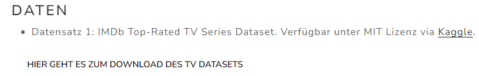
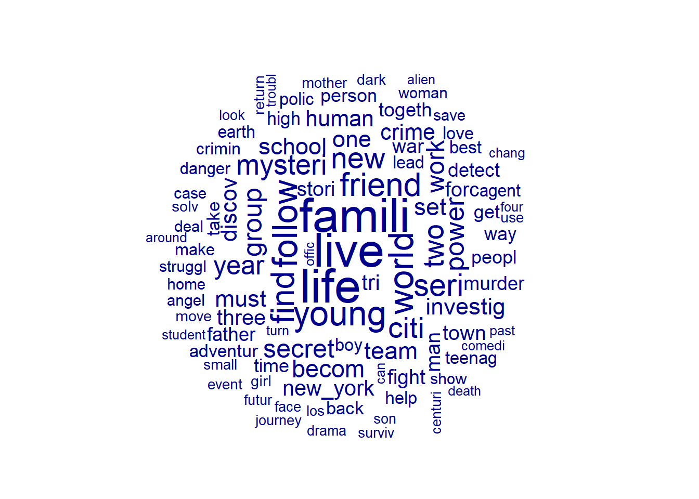

#install.packages("tidyverse)
#install.packages("quanteda")
#install.packages("quanteda.textplots")
#install.packages("RCurl")
library("tidyverse")
library("quanteda")
library("quanteda.textplots")
library("RCurl")Sitzung 1: Daten einlesen und bereinigen
1 Pakete laden und Daten einlesen
Zunächst installieren alle Packete, die wir für diese Sitzung brauchten (z.B. tidyverse). Ihr braucht install.packages() nur, wenn ihr die Pakete im Methodencafe noch nicht installiert hattet-
1.1 Textdaten aus einer lokalen Datei einlesen
Zunächst könnt ihr die Text-Daten via diesem Link auf der Webseite downloaden:

Anschliessen laden wir die Dateien in R. Wenn ihr via JupyterHub arbeitet, geht das via Click-and-Point. Andernfalls nutzt den read.csv()-Befehl. Der Datensatz wird im Objekt data gespeichert.
data <- read.csv2("data_tvseries.csv")1.2 Textdaten von einer URL downloaden
Oft wollen wir Dateien auch direkt von z. B. einer Webseite laden. Dafür nutzen wir die Funktion getURL() aus dem package Rcurl und dann wieder die read.csv2()-Funktion.
library("RCurl")
url <- getURL("https://raw.githubusercontent.com/valeriehase/textasdata-ms/main/data/data_tvseries.csv")
data <- read.csv2(text = url)Nach dem Einlesen der Daten verschaffen wir uns einen Überblick über die Daten und kontrollieren, dass alles korrekt eingelesen wurde.
head(data) Title Year Parental.Rating Rating Number.of.Votes
1 1. Game of Thrones 2011–2019 TV-MA 9.2 2.3M
2 2. Breaking Bad 2008–2013 TV-MA 9.5 2.1M
3 3. Stranger Things 2016–2025 TV-14 8.7 1.3M
4 4. Friends 1994–2004 TV-14 8.9 1.1M
5 5. The Walking Dead 2010–2022 TV-MA 8.1 1.1M
6 6. Sherlock 2010–2017 TV-14 9.1 1M
Description
1 Nine noble families fight for control over the lands of Westeros, while an ancient enemy returns after being dormant for millennia.
2 A chemistry teacher diagnosed with inoperable lung cancer turns to manufacturing and selling methamphetamine with a former student in order to secure his family's future.
3 When a young boy vanishes, a small town uncovers a mystery involving secret experiments, terrifying supernatural forces and one strange little girl.
4 Follows the personal and professional lives of six twenty to thirty year-old friends living in the Manhattan borough of New York City.
5 Sheriff Deputy Rick Grimes wakes up from a coma to learn the world is in ruins and must lead a group of survivors to stay alive.
6 The quirky spin on Conan Doyle's iconic sleuth pitches him as a "high-functioning sociopath" in modern-day London. Assisting him in his investigations: Afghanistan War vet John Watson, who's introduced to Holmes by a mutual acquaintance.2 Preprocessing
2.1 Bereinigung (z. B. Encoding-Probleme)
Nach dem Einlesen haben wir bereits einen Blick in den Datensatz geworfen. Nun schauen wir uns gezielt die Variable Description an, um zu überprüfen, ob der zu analysierende Text gut aussieht.
data %>%
select(Description) %>%
slice(1) Description
1 Nine noble families fight for control over the lands of Westeros, while an ancient enemy returns after being dormant for millennia.Der Text sieht gut aus! Allerdings kann es, gerade bei Texten aus anderen Sprachen, zu sogenannten Encoding Issues kommen.
Schauen wir uns ein Beispiel an: deutsche Umlaute. Was passiert wenn wir hier das Encoding ändern?
#Beispiel-Satz
string <- "Schöne Grüße aus München"
#Encoding prüfen
Encoding(string)[1] "UTF-8"#Encoding testweise ändern
Encoding(string) <- "latin1"
string[1] "Schöne Grüße aus München"Wie könnten wir Encoding-Probleme adressieren?
- Beim Einlesen das richtige Encoding als Argument mitgeben (siehe z.B.
fileEncoding-Argument inread.csv2()) - Mit Hilfe von regulären Ausdrücken bereinigen
Beim manuellen Bereinigen kann die Funktion gsub() helfen, die Zeichenketten ersetzen kann. Zum Beispiel so:
#Mit Hilfe von regulären Ausdrücken bereinigen
string_bereinigt <- string %>%
gsub(pattern = "ö", replacement ="ö") %>%
gsub(pattern = "ü", replacement = "ü") %>%
gsub(pattern = "ß", replacement = "ß")
string_bereinigt[1] "Schöne Grüße aus München"Probieren wir das Ganze am Datensatz aus.
Wir wollen die Nummer, den Punkt und das Leerzeichen vor dem Titel der Tv-Serie in der Variable Title mit gsub() entfernen:
data %>%
head() Title Year Parental.Rating Rating Number.of.Votes
1 1. Game of Thrones 2011–2019 TV-MA 9.2 2.3M
2 2. Breaking Bad 2008–2013 TV-MA 9.5 2.1M
3 3. Stranger Things 2016–2025 TV-14 8.7 1.3M
4 4. Friends 1994–2004 TV-14 8.9 1.1M
5 5. The Walking Dead 2010–2022 TV-MA 8.1 1.1M
6 6. Sherlock 2010–2017 TV-14 9.1 1M
Description
1 Nine noble families fight for control over the lands of Westeros, while an ancient enemy returns after being dormant for millennia.
2 A chemistry teacher diagnosed with inoperable lung cancer turns to manufacturing and selling methamphetamine with a former student in order to secure his family's future.
3 When a young boy vanishes, a small town uncovers a mystery involving secret experiments, terrifying supernatural forces and one strange little girl.
4 Follows the personal and professional lives of six twenty to thirty year-old friends living in the Manhattan borough of New York City.
5 Sheriff Deputy Rick Grimes wakes up from a coma to learn the world is in ruins and must lead a group of survivors to stay alive.
6 The quirky spin on Conan Doyle's iconic sleuth pitches him as a "high-functioning sociopath" in modern-day London. Assisting him in his investigations: Afghanistan War vet John Watson, who's introduced to Holmes by a mutual acquaintance.Das ginge mit folgenden Befehlen:
data <- data %>%
mutate(Title = gsub("^[0-9]+[[:punct:]] ", "", Title))
#So sieht das Ergebnis aus:
data %>%
head(5) Title Year Parental.Rating Rating Number.of.Votes
1 Game of Thrones 2011–2019 TV-MA 9.2 2.3M
2 Breaking Bad 2008–2013 TV-MA 9.5 2.1M
3 Stranger Things 2016–2025 TV-14 8.7 1.3M
4 Friends 1994–2004 TV-14 8.9 1.1M
5 The Walking Dead 2010–2022 TV-MA 8.1 1.1M
Description
1 Nine noble families fight for control over the lands of Westeros, while an ancient enemy returns after being dormant for millennia.
2 A chemistry teacher diagnosed with inoperable lung cancer turns to manufacturing and selling methamphetamine with a former student in order to secure his family's future.
3 When a young boy vanishes, a small town uncovers a mystery involving secret experiments, terrifying supernatural forces and one strange little girl.
4 Follows the personal and professional lives of six twenty to thirty year-old friends living in the Manhattan borough of New York City.
5 Sheriff Deputy Rick Grimes wakes up from a coma to learn the world is in ruins and must lead a group of survivors to stay alive.Probieren wir das weiter aus:
Wir wollen nur TV-Serien behalten, die als “Drama” klassifiziert wurden.
data %>%
# filtern aller TV_Serien, die "Drama" in der Beschreibung beinhalten
filter(grepl("[D|d]rama", Description)) %>%
# Inspektion der ersten fünf Zeilen
head(5) Title Year Parental.Rating Rating
1 Black Mirror 2011– TV-MA 8.7
2 The Lord of the Rings: The Rings of Power 2022– TV-14 7.0
3 Grey's Anatomy 2005– TV-14 7.6
4 Mad Men 2007–2015 TV-MA 8.7
5 Teen Wolf 2011–2017 TV-14 7.7
Number.of.Votes
1 643K
2 355K
3 343K
4 261K
5 164K
Description
1 Featuring stand-alone dramas -- sharp, suspenseful, satirical tales that explore techno-paranoia -- "Black Mirror" is a contemporary reworking of "The Twilight Zone" with stories that tap into the collective unease about the modern world.
2 Epic drama set thousands of years before the events of J.R.R. Tolkien's 'The Hobbit' and 'The Lord of the Rings' follows an ensemble cast of characters, both familiar and new, as they confront the long-feared re-emergence of evil to Middle-earth.
3 A drama centered on the personal and professional lives of five surgical interns and their supervisors.
4 A drama about one of New York's most prestigious ad agencies at the beginning of the 1960s, focusing on one of the firm's most mysterious but extremely talented ad executives, Donald Draper.
5 An average high school student and his best friend get caught up in some trouble causing him to receive a werewolf bite. As a result they find themselves in the middle of all sorts of dramas in Beacon Hills.Und jetzt behalten wir solche, die als “Drama” oder “Crime” klassifiziert wurden.
data %>%
# filtern aller TV_Serien, die "Drama" in der Beschreibung beinhalten
filter(grepl("[D|d]rama|[C|c]rime", Description)) %>%
# Inspektion der ersten fünf Zeilen
head(5) Title Year Parental.Rating Rating
1 Dexter 2006–2013 TV-MA 8.6
2 Black Mirror 2011– TV-MA 8.7
3 Daredevil 2015–2018 TV-MA 8.6
4 The Flash 2014–2023 TV-PG 7.5
5 The Lord of the Rings: The Rings of Power 2022– TV-14 7.0
Number.of.Votes
1 771K
2 643K
3 476K
4 369K
5 355K
Description
1 He's smart. He's lovable. He's Dexter Morgan, America's favorite serial killer, who spends his days solving crimes and nights committing them.
2 Featuring stand-alone dramas -- sharp, suspenseful, satirical tales that explore techno-paranoia -- "Black Mirror" is a contemporary reworking of "The Twilight Zone" with stories that tap into the collective unease about the modern world.
3 A blind lawyer by day, vigilante by night. Matt Murdock fights the crime of New York as Daredevil.
4 After being struck by lightning, Barry Allen wakes up from his coma to discover he's been given the power of super speed, becoming the Flash, and fighting crime in Central City.
5 Epic drama set thousands of years before the events of J.R.R. Tolkien's 'The Hobbit' and 'The Lord of the Rings' follows an ensemble cast of characters, both familiar and new, as they confront the long-feared re-emergence of evil to Middle-earth.📌Aufgabe 1
Könnt ihr…
Basis: Alle Serien identifizieren, die in Deutschland spielen?
Fortgeschritten: Alle Serien identifizieren, in denen es um Superhelden geht und “superhero/superheroes” in der Variable
Descriptionmit “fancy R programmers“ ersetzen?
2.2 Tokenisierung & Zahlen, URLs, etc. entfernen
2.2 Tokenisierung & Zahlen, URLs, etc. entfernen
Die Funktion tokens()von quanteda ermöglicht es uns bei der Aufteilung von Text in tokens direkt bestimmte Zeichen zu entfernen. Hier entfernen wir Punkte, Zahlen, URLs und Symbole.
daten_tokens <- tokens(data$Description, what = "word", remove_punct = TRUE, remove_numbers = TRUE, remove_url = TRUE, remove_symbols = TRUE) #wollen wir das alles entfernen?
daten_tokens %>%
head(n=3)Tokens consisting of 3 documents.
text1 :
[1] "Nine" "noble" "families" "fight" "for" "control"
[7] "over" "the" "lands" "of" "Westeros" "while"
[ ... and 9 more ]
text2 :
[1] "A" "chemistry" "teacher" "diagnosed"
[5] "with" "inoperable" "lung" "cancer"
[9] "turns" "to" "manufacturing" "and"
[ ... and 13 more ]
text3 :
[1] "When" "a" "young" "boy" "vanishes" "a"
[7] "small" "town" "uncovers" "a" "mystery" "involving"
[ ... and 10 more ]2.3 Anpassung auf Kleinschreibung
Mit der Funktion tokens_tolower()aus dem quanteda Packet können alle Buchstaben in Kleinbuchstaben umgeformt werden.
daten_tokens <- tokens_tolower(daten_tokens)
daten_tokens %>%
head(n=3)Tokens consisting of 3 documents.
text1 :
[1] "nine" "noble" "families" "fight" "for" "control"
[7] "over" "the" "lands" "of" "westeros" "while"
[ ... and 9 more ]
text2 :
[1] "a" "chemistry" "teacher" "diagnosed"
[5] "with" "inoperable" "lung" "cancer"
[9] "turns" "to" "manufacturing" "and"
[ ... and 13 more ]
text3 :
[1] "when" "a" "young" "boy" "vanishes" "a"
[7] "small" "town" "uncovers" "a" "mystery" "involving"
[ ... and 10 more ]2.4 Stoppwörter entfernen
Es gibt verschiedene Möglichkeiten, Stoppwörter zu entfernen. Am einfachsten ist dies mithilfe der in quanteda integrierten Stoppwortlisten möglich. Diese sind in mehreren Sprachen verfügbar, darunter auch Deutsch.
stopwords("english") [1] "i" "me" "my" "myself" "we"
[6] "our" "ours" "ourselves" "you" "your"
[11] "yours" "yourself" "yourselves" "he" "him"
[16] "his" "himself" "she" "her" "hers"
[21] "herself" "it" "its" "itself" "they"
[26] "them" "their" "theirs" "themselves" "what"
[31] "which" "who" "whom" "this" "that"
[36] "these" "those" "am" "is" "are"
[41] "was" "were" "be" "been" "being"
[46] "have" "has" "had" "having" "do"
[51] "does" "did" "doing" "would" "should"
[56] "could" "ought" "i'm" "you're" "he's"
[61] "she's" "it's" "we're" "they're" "i've"
[66] "you've" "we've" "they've" "i'd" "you'd"
[71] "he'd" "she'd" "we'd" "they'd" "i'll"
[76] "you'll" "he'll" "she'll" "we'll" "they'll"
[81] "isn't" "aren't" "wasn't" "weren't" "hasn't"
[86] "haven't" "hadn't" "doesn't" "don't" "didn't"
[91] "won't" "wouldn't" "shan't" "shouldn't" "can't"
[96] "cannot" "couldn't" "mustn't" "let's" "that's"
[101] "who's" "what's" "here's" "there's" "when's"
[106] "where's" "why's" "how's" "a" "an"
[111] "the" "and" "but" "if" "or"
[116] "because" "as" "until" "while" "of"
[121] "at" "by" "for" "with" "about"
[126] "against" "between" "into" "through" "during"
[131] "before" "after" "above" "below" "to"
[136] "from" "up" "down" "in" "out"
[141] "on" "off" "over" "under" "again"
[146] "further" "then" "once" "here" "there"
[151] "when" "where" "why" "how" "all"
[156] "any" "both" "each" "few" "more"
[161] "most" "other" "some" "such" "no"
[166] "nor" "not" "only" "own" "same"
[171] "so" "than" "too" "very" "will" daten_tokens <- tokens_remove(daten_tokens, stopwords("english"))Je nach Forschungsfrage können Stoppwortlisten angepasst werden, indem Wörter entfernt oder hinzugefügt werden. Es ist aber auch möglich eine eigene Liste zu erstellen.
#Wörter aus der quanteda Stoppwortliste entfernen
stoppwörter <- stopwords("english")
stoppwörter <- stoppwörter[!stoppwörter %in% c("i", "me")]
#Wörter der quanteda Stoppwortliste hinzufügen
stoppwörter <- c(stoppwörter, "i", "me")
#Eigene Liste erstellen
eigene_stoppwörter <- c("hier", "eigene", "stoppwörter")2.5 Vereinheitlichung
Oft gibt es Wörter, die unterschiedliche Abkürzungen oder Schreibweisen haben. Nehmen wir das Beispiel der Europäischen Union, die auch mit EU oder E.U. abgekürzt wird. Mit Hilfe der Funktion gsub() können wir strings mit anderen strings ersetzen.
string <- "Bei den EU Wahlen können alle Bürger*innen der Europäischen Union wählen gehen."
string <- gsub("Europäischen Union", "EU", string)
print(string)[1] "Bei den EU Wahlen können alle Bürger*innen der EU wählen gehen."2.6 Stemming
Mit der Funktion tokens_wordstem()aus quanteda reduzieren wir alle tokens auf ihren Wortstamm.
daten_tokens <- daten_tokens %>%
tokens_wordstem()
daten_tokens %>%
head(n=3)Tokens consisting of 3 documents.
text1 :
[1] "nine" "nobl" "famili" "fight" "control" "land"
[7] "westero" "ancient" "enemi" "return" "dormant" "millennia"
text2 :
[1] "chemistri" "teacher" "diagnos" "inoper"
[5] "lung" "cancer" "turn" "manufactur"
[9] "sell" "methamphetamin" "former" "student"
[ ... and 4 more ]
text3 :
[1] "young" "boy" "vanish" "small" "town"
[6] "uncov" "mysteri" "involv" "secret" "experi"
[11] "terrifi" "supernatur"
[ ... and 5 more ]2.7 Document-Feature-Matrix
Um aus unseren tokens eine dfm zu machen nutzen wir die dfm()Funktion aus dem quanteda package.
datam <- daten_tokens %>%
dfm()2.8 Seltene/häufige features entfernen
Im letzten Schritt des Preprocessings entfernen wir häufig und selten vorkommende features aus der dfm. Das geht mit der Funktion dfm_trim()aus dem quanteda Packet.
Es können unterschiedliche thresholds gesetzt werden - hier lassen wir nur features in der dfm die mindestens in 0.5% und höchstens in 99% der Dokumente vorkommen. Das Argument docfreq_type = "prop"berechnet den Anteil der Dokumente, die ein bestimmtes feature beinhalten relativ zur Gesamtzahl der Dokumente. verbose = TRUEprinted während der Ausführung der Funktion Informationen über den Rechenvorgang in die Konsole.
datam <- datam %>%
dfm_trim( min_docfreq = 0.005,
max_docfreq = 0.99,
docfreq_type = "prop",
verbose = TRUE) 2.9 Word cloud: Erster Blick in die Daten
Für einen ersten Einblick in die Daten lassen wir uns mit der topfeatures()Funktion aus dem quanteda Packet die 10 am häufigsten vorkommenden features ausgeben.
datam %>%
topfeatures(n = 10) live life famili new young follow world friend find seri
108 108 107 103 74 74 74 70 69 65 Das Ergebnis können wir mit einer word cloud visualisieren. Hierfür nutzen wir die textplot_wordcloud()Funktion aus dem quanteda.textplots Packet.
word_cloud <- datam %>%
textplot_wordcloud(max_words = 100)
Übung: mit emoji einleiten “test your knowledge” mit anderem Datensatz, der nicht zu groß ist